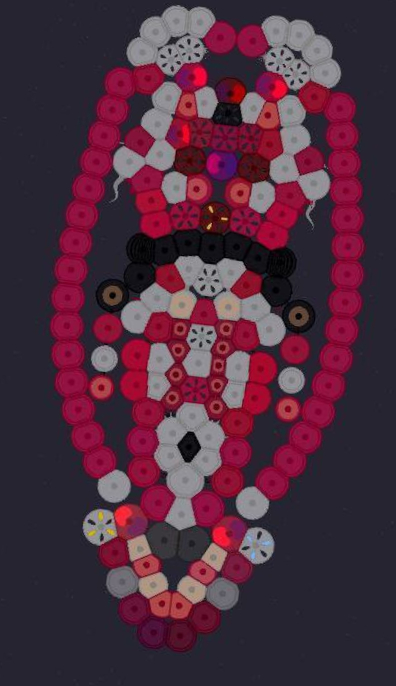

Информация об орге
Здесь вы можете найти информацию организме A-77

ЛОГИКА
у него есть счастье, голод, и стресс
сначала про стресс, стрессует организм при разных ситуациях, например при нападении хищника, или повреждении тканей, во время стресса организм иммобилизируется, начинает плыть быстрее становится манёвренным миоциты сжаты и он реагирует на большее количество цветов вокруг, пугается братьев и стен очень быстро отплывая- похоже на состояние паники, это состояние держится пока рядом хищник в 100 % и ранах, если хищник ушёл а раны затянулись то стресс может убрать —счастье—, но для этого оно должно присутствовать. »> после окончания стресса организм в панике еще минуту.
Память, у него есть временная и постоянная, во временной лежит то, что организм недавно видел, (он видит зеленый и синий и все окружные цвета) и если организм кого-то недавно видел, и вдпуг почувствал боль/увидел труп то он запоминает видимый цвет как врага, и далее боится его, при виде этого цвета будет очень много стресса.
счастье, эмоция противовес стрессу, появляется когда организм сыт и находится в безопасности, в этом состоянии организм менее чувствителен к окружению и обычно сидит на одном месте, перекачивая энергию в костяное яйцо, если после стресса голодный организм поест то будет вырабатываться счастье которое уберёт стресс и успокоит тело, расслабить мышцы.
голод это как маленький стресс, появляется когда у организма кончаются запасы, в связи с этим он начинает искать еду, и хоть как то двигаться, во время этого процесса счастье вырабатываться не может, посему организм может прийти в стресс от хищников + стресс от голода и усталости, что часто травмирует тело.
ещё организм умеет лечить свои раны, но не все, те которые не затрагивают мозг, в месте повреждения появляется костяная лапка
СТРОЕНИЕ МОЗГА И НС
Салатовый - типа гиппокамп (отвечает за память)
Темно красный - гипоталамус (отвечает за эмоции (голод, счастье немного стресса)
Малиновый - миндалевидное ( отвечает за страх и сильный стресс )
Оранжевый - мозжечок ( управление телом и распределение сигналов движения)
Темно зелёный - проводники сигналов
чёрный - глаза
СТРОЕНИЕ ТЕЛА
Мозг закрыт костяными щитками из остеоцитов, ниже запасные лепестки которые чувствуют повреждения и быстро делают латки, в отличии от других мест где это происходит медленно.
Внутри тела проходит 2 линии передачи энергии "кровь, которая дает энергию при голоде, и помогает лучше питать заднюю часть, где находится большой орган.
На конце находится яйцо последнего покаления, где ребенок сидит в костяном яйце и рождается уже живым. (При повреждении кост яйца организм все ровно сможет вырости
РОСТ И РАЗВИТИЕ
Из яйца вылупляется организм с полностью готовой нервной системой, все системы мозга работают со старта
Рост происходит при помощи стволоцитов, одна часть говорит другой что сформировалась, такими ступенями развивается кровь, дабы организм не порвало давление
Правки:
1.Укрепление всей поверхности остеоцитами и кератиноцитами
2.Больше клеток способны регенерировать
3. Теперь при повреждении жизненно важных органов будет выделяться кислота
4.теперь верхняя и нижняя часть тела лучше общаются, от чего организм стал быстрее и маневрнее
5. Организму больше не нужны нитраты
6.Лепести остеоцитов при повреждении от хищников могут склеивать его как паутиной
7. Яйцо организма может быть самобытно и при съедении верхней части яйцо отсоединяется и превращается в крепкую капсулу